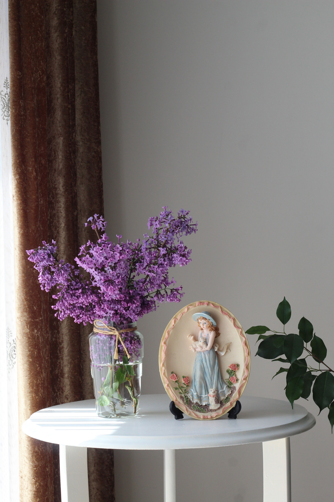

En este artículo
Introducción
Aprende a organizar un armario, clasificar ropa y aprovechar espacio vertical con un sistema fácil de mantener.
Antes de realizar cambios conviene observar las condiciones reales del espacio, definir qué problema quieres resolver y priorizar las medidas de mayor impacto. Esta planificación evita compras impulsivas y soluciones difíciles de mantener.
En esta guía se mantiene la estructura editorial de Casa & Jardín: introducción, tres bloques principales, consejos prácticos, imágenes internas, preguntas frecuentes y una conclusión útil. Cada recomendación está pensada para aplicarse de forma gradual.
Cuando una intervención implique instalaciones, estructura, trabajos en altura o productos potencialmente peligrosos, utiliza siempre métodos seguros y recurre a un profesional cualificado cuando sea necesario.
Vacía, revisa y clasifica antes de comprar organizadores
El primer paso para organizar un armario no es comprar cajas: es saber qué contiene. Vacía una zona a la vez para evitar convertir toda la habitación en un caos. Puedes empezar por una barra, un cajón o un estante.
Clasifica la ropa en categorías simples: uso frecuente, temporada, ocasiones especiales, reparar, donar y descartar. Evita crear demasiadas categorías porque complican la decisión. El objetivo es reducir volumen y entender cuánto espacio necesita cada grupo.
Prueba las prendas que generan dudas. Si no las utilizas porque ya no te quedan bien, están dañadas o no corresponden a tu vida actual, decide si merece la pena repararlas o conservarlas.
Las prendas sentimentales pueden guardarse aparte. No es necesario donar todo lo que no utilizas si tiene un valor personal, pero conviene limitar el espacio destinado a recuerdos para que no ocupen la zona principal.
Revisa duplicados. Varias camisetas idénticas pueden ser útiles, pero cinco bolsos casi iguales quizá no. Eliminar redundancias libera espacio sin afectar la variedad funcional.
No guardes ropa húmeda o sucia. Antes de almacenar prendas fuera de temporada, lávalas y sécalas completamente. Esto reduce olores y riesgo de moho.
Mide el armario después de clasificar. Solo entonces podrás saber si necesitas cajas, divisores, baldas adicionales o un segundo nivel de barra.
Consejo práctico
Aplica los cambios de forma gradual y observa el resultado antes de continuar. Este método permite identificar qué medida funciona realmente y evita añadir tareas o gastos innecesarios.
Aprovecha altura, barras y cajones de forma eficiente
El espacio vertical suele estar mal aprovechado. Si existe una gran distancia entre la barra y el suelo, una segunda barra puede duplicar la capacidad para camisas, chaquetas cortas y pantalones doblados.
Las prendas largas necesitan una zona específica. Vestidos y abrigos no deben quedar apoyados sobre cajas o zapatos. Reserva una sección alta para ellas y utiliza el resto para prendas cortas.
Los estantes superiores funcionan bien para maletas, ropa de cama o prendas de temporada. Utiliza cajas etiquetadas para evitar tener que abrir todo cada vez que buscas algo.
Los cajones pueden organizarse por categorías. Doblar camisetas y ropa interior de manera vertical permite ver más prendas a la vez. No es obligatorio seguir una técnica perfecta; lo importante es que puedas sacar una pieza sin desordenar el resto.

Los separadores son útiles en cajones grandes. Evitan que calcetines, accesorios y ropa interior se mezclen. Elige divisiones ajustables si las categorías cambian con frecuencia.
Las puertas del armario pueden aprovecharse con colgadores adecuados, siempre que no interfieran con el cierre. Bolsos ligeros, cinturones o pañuelos pueden ocupar ese espacio.
No sobrecargues barras ni estantes. Si una barra se curva o los soportes se aflojan, reduce peso. La organización debe mejorar el uso sin comprometer la estructura.
¿Qué debemos tener en cuenta?
Aplica los cambios de forma gradual y observa el resultado antes de continuar. Este método permite identificar qué medida funciona realmente y evita añadir tareas o gastos innecesarios.
Mantén un sistema sencillo que no vuelva a desordenarse
Organizar una vez no garantiza que el armario permanezca ordenado. El sistema debe ser fácil de mantener. Las prendas de uso diario necesitan estar en la zona más accesible, mientras lo estacional puede ocupar posiciones altas.
Utiliza perchas del mismo tamaño cuando sea posible. Esto crea una línea visual más limpia y evita que algunas ocupen demasiado espacio. No es necesario que sean idénticas, pero sí compatibles con el tipo de ropa.
Los zapatos deben mantenerse en una zona definida. Estantes bajos, cajas transparentes o un zapatero pueden funcionar. Evita apilar pares de forma inestable.
Los bolsos conservan mejor su forma si no se comprimen demasiado. Puedes rellenar los más estructurados con papel limpio o utilizar separadores. Evita colgar bolsos pesados de asas delicadas durante largos periodos.
Revisa el armario al cambiar de temporada. Este momento permite retirar prendas dañadas, reorganizar lo que vuelve a usarse y limpiar estantes.
Aplica una regla de entrada. Cuando compras una prenda nueva, comprueba dónde irá. Si el armario ya está lleno, quizá sea momento de revisar una categoría.
El objetivo no es llenar cada centímetro. Dejar algo de espacio libre facilita mover prendas, guardar compras y mantener el orden sin tener que comprimir todo.
Recomendaciones prácticas
Aplica los cambios de forma gradual y observa el resultado antes de continuar. Este método permite identificar qué medida funciona realmente y evita añadir tareas o gastos innecesarios.
Organizar la ropa por temporada y frecuencia de uso
La zona más accesible del armario debe reservarse para prendas que utilizas cada semana. La ropa de otras temporadas puede guardarse en estantes altos o cajas, dejando espacio para lo que realmente necesitas ahora.
Antes de guardar una temporada, lava y seca completamente las prendas. Las manchas pequeñas pueden fijarse con el tiempo y la humedad favorece olores. Utiliza cajas o bolsas transpirables adecuadas al tipo de tejido.
Etiqueta cada caja con una categoría simple: invierno, verano, ropa de cama o accesorios. Evita descripciones demasiado generales como “varios”. Cuando llegue el cambio de temporada, encontrar lo necesario será más rápido.

Los abrigos y chaquetas pesadas necesitan perchas resistentes y suficiente espacio para no deformarse. Los tejidos de punto suelen conservar mejor su forma doblados en lugar de colgados.
Al recuperar ropa de temporada, revisa antes de colocarla en la zona principal. Si una prenda no se utilizó durante varios años, quizá sea momento de donarla o venderla.
Cómo organizar zapatos, bolsos y accesorios
Los zapatos funcionan mejor cuando cada par puede verse. Estantes inclinados, cajas transparentes o una zona inferior dedicada facilitan elegir sin crear montones. Mantén los pares más utilizados cerca de la altura cómoda.
Los bolsos necesitan conservar su forma. Los modelos estructurados pueden rellenarse con papel limpio o bolsas de tela. Colócalos de pie cuando sea posible y evita comprimirlos bajo objetos pesados.
Los cinturones y pañuelos pueden colgarse en soportes verticales. Este sistema utiliza poco espacio y evita que se enreden dentro de cajones. Los accesorios pequeños pueden agruparse en divisores.
Las joyas necesitan una organización que evite nudos y daños. Bandejas con compartimentos, ganchos o cajas pequeñas funcionan bien. No mezcles piezas delicadas con objetos pesados.
El objetivo es que cada accesorio pueda recuperarse y guardarse en pocos segundos. Si el sistema exige desmontar varias cajas, terminará abandonándose.
Rutina para mantener el armario organizado
Una vez por semana, devuelve prendas que hayan quedado fuera de su categoría. Este pequeño ajuste evita que el armario vuelva a desordenarse por completo.
Al guardar ropa limpia, coloca cada pieza directamente en su lugar. Dejar pilas temporales sobre una silla o cama crea un segundo sistema que compite con el armario.
Revisa cajones cada pocos meses. Los objetos pequeños suelen desplazarse y generar acumulación invisible. Una revisión rápida permite eliminar calcetines sin pareja, accesorios rotos y prendas que ya no se usan.
No llenes cada espacio libre con una caja. Dejar margen facilita introducir una compra nueva y mantener circulación de aire. Un armario completamente comprimido resulta difícil de usar.
Si el sistema deja de funcionar, analiza la causa. Tal vez una categoría creció o cambió tu rutina. Ajustar un estante o mover una barra puede ser más útil que reorganizar todo desde cero.
Cómo organizar un armario pequeño sin saturarlo
En un armario pequeño, cada centímetro debe responder a una necesidad. Empieza por las prendas de uso frecuente y reserva la mejor zona para ellas. La ropa que utilizas una vez al año no debería ocupar el centro visual ni desplazar prendas diarias.
Una segunda barra es una de las soluciones más útiles cuando la mayoría de la ropa colgada es corta. Camisas, chaquetas y pantalones doblados pueden distribuirse en dos niveles. Deja una sección completa para vestidos y abrigos largos.
Los estantes estrechos funcionan mejor con cajas o pilas pequeñas. Si una pila de camisetas supera una altura cómoda, terminará cayéndose cada vez que retires una prenda. Dividir un estante alto con una balda adicional puede mejorar mucho el acceso.

Utiliza la parte inferior para zapatos o cajones, pero mantén suficiente espacio para limpiar. Evita llenar el suelo con bolsas sueltas porque dificultan ver lo que tienes y acumulan polvo.
La profundidad también importa. En armarios profundos, coloca artículos de uso poco frecuente detrás y los diarios delante. Las cajas extraíbles o bandejas deslizantes permiten acceder al fondo sin desmontar todo.
Los organizadores colgantes pueden añadir baldas temporales, aunque consumen parte de la barra. Utilízalos cuando realmente sustituyen un mueble o resuelven una categoría concreta.
Errores frecuentes al organizar un armario
Comprar organizadores antes de clasificar es uno de los errores más comunes. Puedes terminar con cajas que no encajan o con demasiados compartimentos para objetos que ya no necesitas.
Otro error es doblar o colgar cada prenda según una técnica demasiado complicada. Si guardar una camiseta requiere varios pasos, el sistema no durará. El método debe ser rápido y fácil de repetir.
Las bolsas de vacío liberan espacio para textiles voluminosos, pero no son adecuadas para todos los materiales ni para almacenamiento constante. Revisa las recomendaciones del tejido y evita comprimir prendas delicadas.
Guardar demasiados “por si acaso” ocupa capacidad que podrías utilizar para lo actual. Si una prenda no se usa desde hace años, evalúa honestamente si sigue teniendo una función real.
También conviene evitar perchas demasiado gruesas cuando el espacio es limitado. Modelos finos y resistentes pueden liberar centímetros, pero deben soportar el peso de la prenda sin deformarla.
Por último, no conviertas la parte superior del armario en un depósito sin categorías. Etiquetar cajas y limitar el número evita olvidar lo que existe allí durante años.
Organizar un armario compartido
Cuando dos personas comparten armario, dividir por zonas reduce conflictos. Cada una puede tener una barra, cajones o estantes definidos. Las categorías comunes, como ropa de cama, ocupan un espacio separado.
No es necesario repartir exactamente la mitad si las necesidades son diferentes. La distribución puede ajustarse al volumen real de ropa, siempre que ambas personas conozcan el sistema.
Los accesorios pequeños necesitan límites claros. Una bandeja por persona para relojes, cinturones o joyas evita mezclar objetos y facilita encontrar lo necesario.
Realiza una revisión conjunta al cambiar de temporada. Este momento permite reorganizar sin que una persona mueva las pertenencias de la otra y mantiene el sistema actualizado.
Si una zona compartida se desordena constantemente, simplifica la categoría. Una sola cesta para ropa deportiva o accesorios puede funcionar mejor que varias divisiones demasiado específicas.
Preguntas frecuentes
¿Es mejor doblar o colgar la ropa?
Depende del tejido. Camisas, chaquetas y prendas que se arrugan suelen colgarse; punto y camisetas pueden doblarse.
¿Cómo aprovechar la parte alta del armario?
Utiliza cajas etiquetadas para ropa de temporada, mantas o artículos de uso poco frecuente.
¿Qué hago si tengo demasiada ropa?
Clasifica, prueba y elimina duplicados o prendas que ya no utilizas antes de comprar más almacenamiento.
¿Son útiles los organizadores de armario?
Sí, cuando responden a una necesidad concreta. Comprar organizadores antes de clasificar suele desperdiciar espacio.
¿Cada cuánto conviene revisar el armario?
Al menos con cada cambio de temporada o cuando notes que guardar ropa vuelve a ser difícil.
Conclusión
Cómo organizar un armario y aprovechar mejor el espacio funciona mejor cuando las decisiones parten de las condiciones reales del espacio y pueden mantenerse con una rutina sencilla.
La constancia suele ofrecer mejores resultados que las intervenciones intensas realizadas solo cuando aparece un problema.
Revisa el resultado después de varias semanas y ajusta únicamente aquello que siga siendo incómodo, poco práctico o difícil de mantener.
Con planificación y mantenimiento preventivo es posible conseguir un resultado más cómodo, funcional y duradero.